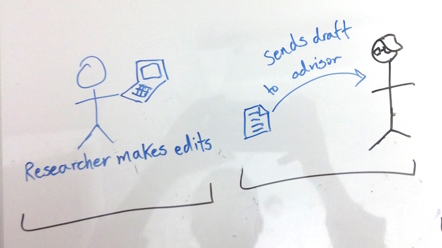

Leveraging Mobile Technology to Accelerate Feedback in ShareLaTeX
Making ShareLaTeX More Collaborative
Sharelatex is a collaborative, cloud-based LaTeX editing tool that allows multiple users to simultaneously edit the same LaTeX document. This is a good start, but I believe we can move this tool to mobile and improve the workflow even more. This could be accomplished by cutting up work into smaller pieces that can be easily accomplished on mobile devices.
Simplifying Functionality for Mobile
The first, simple approach was to simply take ShareLaTeX, break it into tabs or swipable screens, and move it onto a mobile app. However, I thought that an opportunity might be missed if we simply make the mobile app the same thing as the desktop version.
Current Process
Looking at the process of editing a research paper on ShareLaTeX, a pain point becomes clear, receiving edits takes time. Even if you want feedback on a tiny change, you need to send your entire paper over, that requires more time to be set aside, and that slows down the process.
Even to have minor edits reviewed, a whole draft is generally sent.
Setting aside a couple hours to edit is difficult.

Process with a Mobile App.
What if instead, a user could send edits over in pieces that could easily fit into the editor’s busy schedule?

The mobile platform allows for editing all the time. The advisor/editor can edit on the train or while waiting for a pot to boil. Time that would normally be idle can now be used more productively.
Editor can edit small pieces during spare moments, returning the edits to the writer in little time.

Primary Feature
When the user selects a section of text to be submitted for editing. The text then shows up in the app of the editor along with all other sections. All changes are tracked and show up in the desktop version of the piece as edits. The other main feature of the mobile app is the ability to view captions and figures together and edit captions.
Navigation
The page at the center of navigation is the home page where a user can keep track of the work for which teammates are seeking feedback.